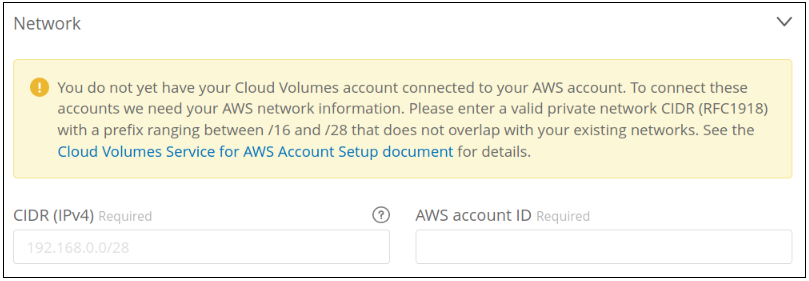

Note di rilascio
Note di rilascio
Creazione di un volume cloud
 Suggerisci modifiche
Suggerisci modifiche
È possibile creare volumi cloud dal sito NetApp Cloud Orchestrator.
Prerequisiti
L’ambiente AWS deve soddisfare determinati requisiti prima di poter creare il primo volume cloud. Per ogni regione AWS in cui si prevede di implementare volumi cloud, è necessario disporre di:
-
Virtual Private Cloud (VPC)
-
Virtual Private Gateway (VGW) collegato al VPC
-
Subnet del VPC
-
Percorsi definiti che includono la rete su cui verranno eseguiti i volumi cloud
-
Facoltativamente, un gateway Direct Connect
Quando crei il tuo primo volume cloud in una regione, devi avere a disposizione le seguenti informazioni:
-
AWS account ID: Un identificativo di account Amazon a 12 cifre senza trattini.
-
Blocco CIDR (Classless Inter-Domain Routing): Un blocco CIDR IPv4 non utilizzato. Il prefisso di rete deve essere compreso tra /16 e /28 e deve rientrare anche negli intervalli riservati alle reti private (RFC 1918). Non scegliere una rete che si sovrapponga alle allocazioni CIDR VPC.
-
È necessario selezionare la regione corretta in cui si desidera utilizzare il servizio. Vedere "Selezione della regione".
Se non sono stati configurati i componenti di rete AWS richiesti, consultare "Configurazione dell’account NetApp Cloud Volumes Service per AWS" guida per i dettagli.
Nota: quando si intende creare un volume SMB, è necessario disporre di un server Windows Active Directory a cui connettersi. Queste informazioni verranno inserite durante la creazione del volume. Inoltre, assicurarsi che l’utente Admin sia in grado di creare un account macchina nel percorso dell’unità organizzativa (OU) specificato.
Inserire i dettagli del volume
Completare i campi nella parte superiore della pagina Create Volume (Crea volume) per definire il nome del volume, le dimensioni, il livello di servizio e molto altro.
-
Dopo aver effettuato l’accesso a "NetApp Cloud Orchestrator" sito con l’indirizzo e-mail fornito durante l’abbonamento "ha selezionato la regione", Fare clic sul pulsante Create new volume (Crea nuovo volume).

-
Dalla pagina Create Volume (Crea volume), selezionare NFS, SMB o Dual-Protocol come protocollo per il volume che si desidera creare.
-
Nel campo Nome, specificare il nome che si desidera utilizzare per il volume.
-
Nel campo Regione, selezionare la regione AWS in cui si desidera creare il volume. Questa regione deve corrispondere alla regione configurata su AWS.
-
Nel campo Timezone, selezionare il proprio fuso orario.
-
Nel campo Volume path, specificare il percorso che si desidera utilizzare o accettare il percorso generato automaticamente.
-
Nel campo livello di servizio, selezionare il livello di performance per il volume: Standard, Premium o Extreme.
Vedere "Selezione del livello di servizio" per ulteriori informazioni.
-
Nel campo Allocated Capacity (capacità allocata), selezionare la capacità richiesta. Si noti che il numero di inode disponibili dipende dalla capacità allocata.
Vedere "Selezione della capacità allocata" per ulteriori informazioni.
-
Nel campo NFS version (versione NFS), selezionare NFSv3, NFSv4.1 o Both a seconda dei requisiti.
-
Se si seleziona Dual-Protocol, è possibile selezionare lo stile di protezione nel campo Security Style selezionando NTFS o UNIX dal menu a discesa.
Gli stili di sicurezza influiscono sul tipo di autorizzazione del file utilizzato e sulla modalità di modifica delle autorizzazioni.
-
UNIX utilizza i bit di modalità NFSv3 e solo i client NFS possono modificare le autorizzazioni.
-
NTFS utilizza ACL NTFS e solo i client SMB possono modificare le autorizzazioni.
-
-
Nel campo Show snapshot directory (Mostra directory snapshot), mantenere l’impostazione predefinita in cui è possibile visualizzare la directory Snapshot per questo volume oppure deselezionare la casella per nascondere l’elenco delle copie Snapshot.
Inserire i dettagli di rete (impostazione unica per regione AWS)
Se è la prima volta che si crea un volume cloud in questa regione AWS, viene visualizzata la sezione Network in modo da poter collegare l’account Cloud Volumes all’account AWS:
-
Nel campo CIDR (IPv4), immettere l’intervallo IPv4 desiderato per la regione. Il prefisso di rete deve essere compreso tra /16 e /28. La rete deve inoltre rientrare negli intervalli riservati alle reti private (RFC 1918). Non scegliere una rete che si sovrapponga alle allocazioni CIDR VPC.
-
Nel campo AWS account ID, immetti l’identificativo di 12 cifre dell’account Amazon senza trattini.

Inserire le regole dei criteri di esportazione (facoltativo)
Se si seleziona NFS o Dual-Protocol, è possibile creare una policy di esportazione nella sezione Export policy per identificare i client che possono accedere al volume:
-
Nel campo Allowed clients, specificare i client consentiti utilizzando un indirizzo IP o CIDR (Classless Inter-Domain Routing).
-
Nel campo Access, selezionare Read & Write o Read Only.
-
Nel campo Protocols (protocolli), selezionare il protocollo (o i protocolli se il volume consente l’accesso NFSv3 e NFSv4.1) utilizzato per l’accesso dell’utente.

Fare clic su + Add export policy rule (Aggiungi regola policy di esportazione) se si desidera definire ulteriori regole dei criteri di esportazione.
Abilitare la crittografia dei dati (opzionale)
-
Se si seleziona SMB o Dual-Protocol, è possibile attivare la crittografia della sessione SMB selezionando la casella del campo Enable SMB3 Protocol Encryption (attiva crittografia protocollo SMB3).
Nota: non attivare la crittografia se i client SMB 2.1 devono montare il volume.
Integrare il volume con un server Active Directory (SMB e Dual Protocol)
Se si seleziona SMB o Dual-Protocol, è possibile scegliere di integrare il volume con un server Windows Active Directory o AWS Managed Microsoft ad nella sezione Active Directory.
Nel campo Available settings (Impostazioni disponibili), selezionare un server Active Directory esistente o aggiungere un nuovo server ad.
Per configurare una connessione a un nuovo server ad:
-
Nel campo DNS server, immettere gli indirizzi IP dei server DNS. Utilizzare una virgola per separare gli indirizzi IP quando si fa riferimento a più server, ad esempio 172.31.25.223, 172.31.2.74.
-
Nel campo Domain, immettere il dominio per la condivisione SMB.
Quando si utilizza AWS Managed Microsoft ad, utilizzare il valore del campo "Directory DNS name" (Nome DNS directory).
-
Nel campo SMB Server NetBIOS, immettere un nome NetBIOS per il server SMB che verrà creato.
-
Nel campo unità organizzativa, immettere "CN=computer" per le connessioni al proprio server Windows Active Directory.
Quando si utilizza AWS Managed Microsoft ad, l’unità organizzativa deve essere inserita nel formato "OU=<NetBIOS_name>". Ad esempio, OU=AWSmanagedAD.
Per utilizzare un’unità organizzativa nidificata, è necessario richiamare prima l’unità organizzativa di livello più basso fino al livello più alto. AD ESEMPIO: OU=THIRDLEVEL,OU=SECONDLEVEL,OU=FIRSTLEVEL.
-
Nel campo Nome utente, immettere un nome utente per il server Active Directory.
È possibile utilizzare qualsiasi nome utente autorizzato a creare account di computer nel dominio Active Directory a cui si accede al server SMB.
-
Nel campo Password, immettere la password per il nome utente ad specificato.

Vedere "Progettazione di una topologia di sito per i servizi di dominio Active Directory" Per indicazioni sulla progettazione di un’implementazione ottimale di Microsoft ad.
Vedere "Configurazione del servizio di directory AWS con NetApp Cloud Volumes Service per AWS" Guida per istruzioni dettagliate sull’utilizzo di AWS Managed Microsoft ad.

Seguire le istruzioni relative alle impostazioni del gruppo di sicurezza AWS per consentire ai volumi cloud di integrarsi correttamente con i server Windows Active Directory. Vedere "Impostazioni del gruppo di protezione AWS per i server Windows ad" per ulteriori informazioni. Nota: gli utenti UNIX che montano il volume usando NFS saranno autenticati come utente Windows "root" per UNIX root e "pcuser" per tutti gli altri utenti. Assicurarsi che questi account utente esistano in Active Directory prima di montare un volume a doppio protocollo quando si utilizza NFS.
Creazione di una policy Snapshot (opzionale)
Se si desidera creare una policy di snapshot per questo volume, inserire i dettagli nella sezione Snapshot policy:
-
Selezionare la frequenza dello snapshot: Orario, giornaliero, settimanale o mensile.
-
Selezionare il numero di snapshot da conservare.
-
Selezionare l’ora in cui deve essere eseguita l’istantanea.

È possibile creare ulteriori criteri di snapshot ripetendo i passaggi sopra descritti o selezionando la scheda Snapshot dall’area di navigazione a sinistra.
Creare il volume
-
Scorrere fino alla fine della pagina e fare clic su Create Volume (Crea volume).
Se in precedenza è stato creato un volume cloud in questa regione, il nuovo volume viene visualizzato nella pagina Volumes (volumi).
Se si tratta del primo volume cloud creato in questa regione AWS e sono state inserite le informazioni di rete nella sezione Network di questa pagina, viene visualizzata una finestra di dialogo di avanzamento che identifica i passaggi successivi da seguire per collegare il volume alle interfacce AWS.

-
Accettare le interfacce virtuali come descritto nella sezione 6.4 del "Configurazione dell’account NetApp Cloud Volumes Service per AWS" guida. Questa attività deve essere eseguita entro 10 minuti per non causare il timeout del sistema.
Se le interfacce non vengono visualizzate entro 10 minuti, potrebbe essersi verificato un problema di configurazione; in tal caso, contattare il supporto.
Una volta create le interfacce e gli altri componenti di rete, il volume creato viene visualizzato nella pagina Volumes (volumi) e il campo Actions (azioni) viene elencato come Available (disponibile).

Continuare con "Montaggio di un volume cloud".